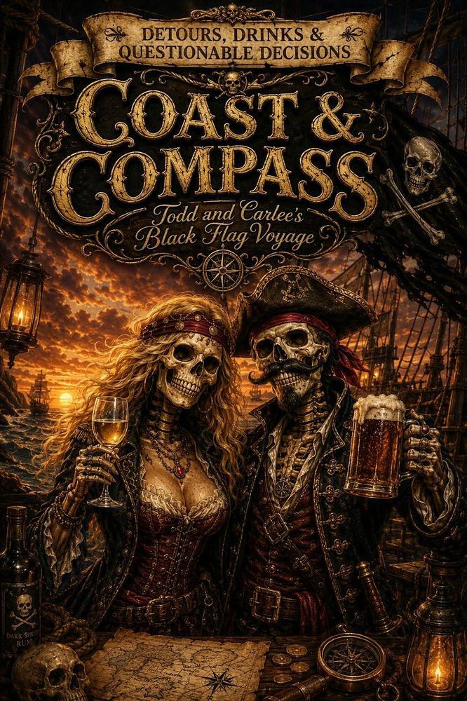
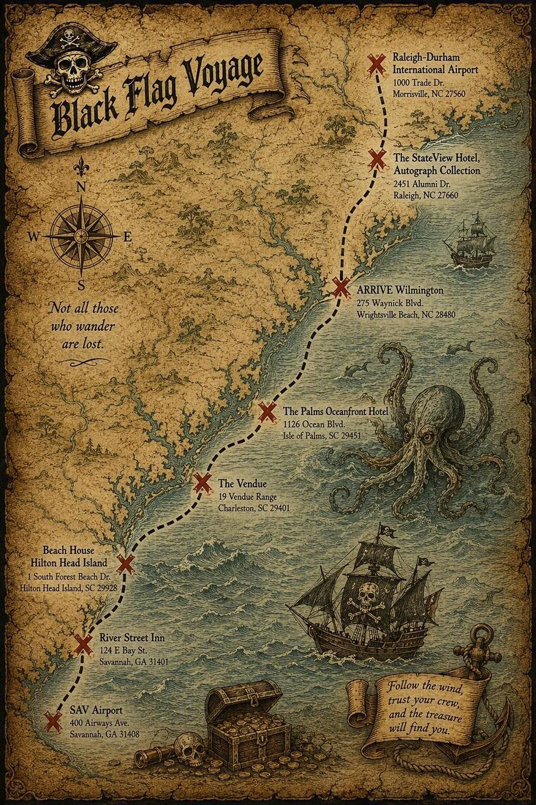
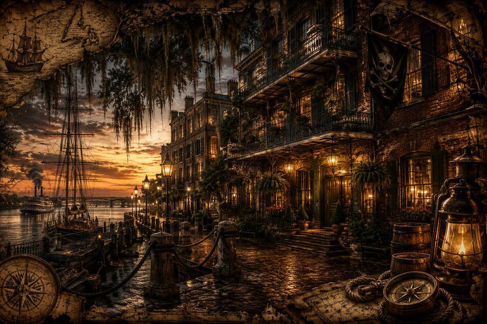
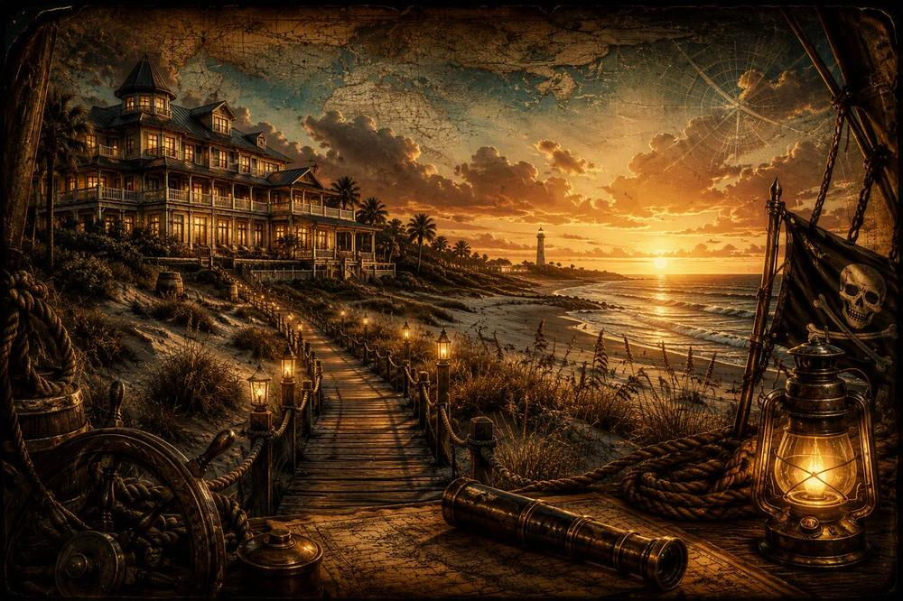
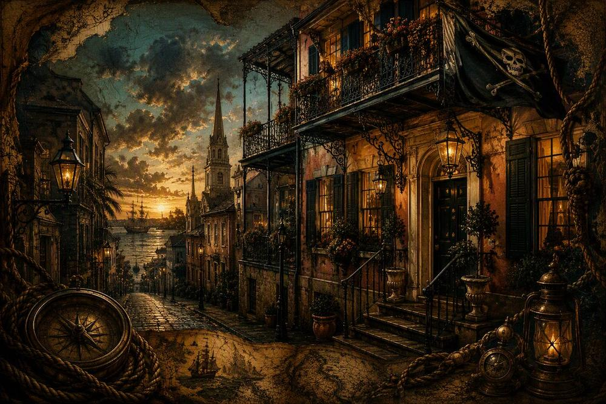
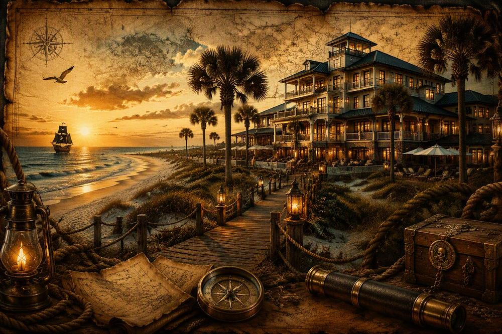
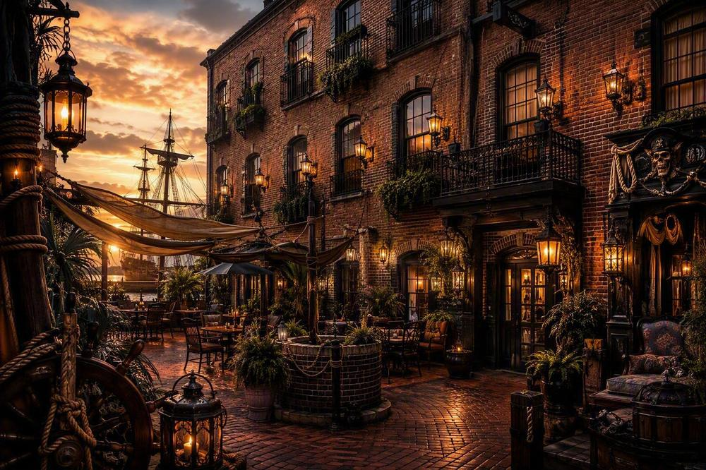
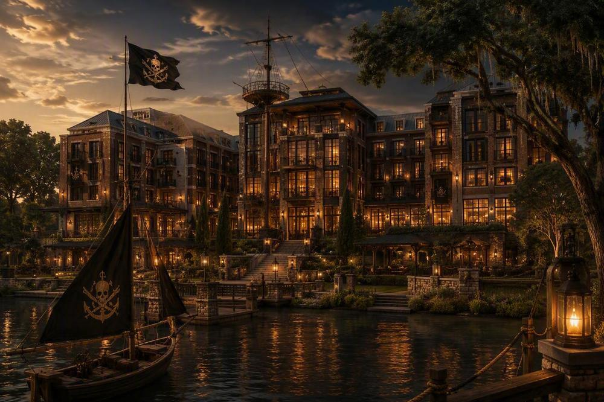
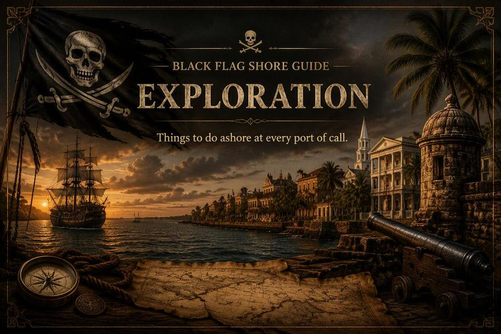

SAV Airport → River Street Inn
400 Airways Ave, Savannah, GA 31408400 Airways Ave, Savannah, GA 31408
124 E Bay St, Savannah, GA 31401124 E Bay St, Savannah, GA 31401

This be Todd and Carlee's living ship's log and trusty voyage companion. Follow our course from harbor to harbor, track our vessel throughout the voyage, and discover the tales, portraits, and treasures gathered along the way. Friends and family be welcome aboard and may send dispatches, comments, and even their own snapshots as the adventure unfolds.

The treasure map shows the voyage route, booked hotel stops, and arrival/departure airports.

Savannah

Hilton Head Island

Charleston

Isle of Palms

Wrightsville Beach

Raleigh
Take a photo or choose pictures from your phone.
Crew and followers alike — leave word for the voyage below.

Bathroom Readin' · About 8 minutes
The tourists who stroll Savannah's squares, sip cocktails in Charleston, and watch the waves roll into North Carolina's beaches rarely realize that three hundred years ago these same waters belonged to thieves, murderers, slavers, and desperate men.
The postcards never mention that part.
The coast of Georgia, South Carolina, and North Carolina was one of the wildest places in the British colonies during the early 1700s. Empire, war, disease, shipwrecks, and piracy collided here in a violent world where a man's fortune could be won by sunrise and lost before sunset.
Life at sea was already miserable before a pirate ever appeared.
Merchant sailors lived on rotten food, foul water, and wages that were often never paid. Disease swept through ships. Storms snapped masts like twigs. Men could fall overboard and disappear without a splash being noticed.
Pirates were often former sailors who decided they'd rather steal fortunes than die earning pennies.
It was a terrible career choice.
Yet many made it willingly.
The Georgia coast was their perfect refuge.
Thousands of acres of marshland stretched beneath the sun. Rivers twisted like serpents through grass taller than a man. Hidden islands sat behind walls of mud and reeds.
A pirate ship could vanish there.
The British Navy would arrive searching for outlaws and find only fog, mosquitoes, and frustration.
Somewhere among those islands sailed a giant of a man named Blackbeard.
His real weapon was not his sword.
It was fear.
He cultivated his appearance carefully. Pistols hung from his chest. Knives filled his belt. Slow-burning fuses smoldered beneath his hat and through his beard, surrounding his face with smoke.
When terrified merchant crews saw him emerge from the haze, many surrendered immediately.
That was exactly what he wanted.
A battle damaged cargo.
Fear delivered it intact.
Still, violence remained common.
Ships that resisted could be boarded. Crews were beaten. Captains were tortured for information. Prisoners could be abandoned on remote islands with little food and less hope.
Piracy was business.
Brutality was simply overhead.
Then came Charleston.
In 1718 it was one of the richest ports in North America.
To Blackbeard it looked like a vault with the door left open.
His flotilla appeared outside the harbor and seized ships attempting to enter or leave. Wealthy citizens were taken hostage. Panic spread through the town.
For nearly a week the colony was helpless.
Merchants feared financial ruin.
Families feared executions.
Officials feared humiliation.
Blackbeard demanded a chest of medicines for his crew and threatened retaliation if his demands were ignored.
People today often expect pirates to demand gold.
The truth was uglier.
Medicine was worth more.
Disease killed far more pirates than combat ever did.
A cut on a dirty ship could become fatal.
Fever swept through crews.
Infection was often a death sentence.
The harbor blockade ended only when the ransom was delivered.
Charleston survived.
The legend grew.
Farther north, the Outer Banks of North Carolina became pirate kingdom and graveyard all at once.
The sea itself was murderous.
Sandbars shifted constantly. Storms arrived without warning. Hundreds of ships wrecked along the coast.
Locals called sections of the shoreline the Graveyard of the Atlantic.
A captain might survive pirates only to lose his ship to the sea.
Blackbeard loved these waters.
He operated around Ocracoke, Beaufort, and Bath, where hidden channels offered protection and escape.
For a brief time he even accepted a royal pardon.
Imagine the scene.
One of the most feared criminals in the Atlantic world walks ashore and announces he's now retired.
Perhaps he envisioned peaceful evenings and respectable citizenship.
If so, it didn't last.
Piracy paid better.
Soon he was back at sea.
The end came in November 1718.
A naval force hunted him down near Ocracoke Inlet.
The battle that followed was not the romantic swordfight of movies.
It was slaughter.
Guns discharged at point-blank range. Cutlasses hacked through flesh. Men grappled in smoke, blood, and splintered wood.
Witnesses later reported that Blackbeard suffered multiple gunshot wounds and numerous cuts before finally falling.
His severed head was displayed as a warning.
That was the age in which he lived.
Mercy was not a common currency.
And what of the treasure?
That is what everyone wants to know.
Did Blackbeard bury gold on a Georgia island?
Did silver lie beneath the dunes of the Carolinas?
Did pirate fortunes vanish beneath the sea?
Perhaps.
But the greatest treasure pirates ever possessed was not gold.
It was freedom.
Brief, dangerous, violent freedom.
Most pirates died young.
Many were hanged.
Others drowned.
Some disappeared.
A few became legends.
Today the marshes of Georgia glow at sunset. Charleston Harbor welcomes visitors instead of raiders. The beaches of North Carolina are filled with vacationers.
But beneath the beauty, the old coast remains.
Every creek, inlet, and barrier island holds the memory of a time when black sails appeared on the horizon and every ship's captain had to decide a terrible question:
Fight, run, or surrender.
And more often than the stories admit, surrender was the smart choice.
Speak the secret word to open the private voyage accounts.
September 11–19, 2026 · Todd & Carlee
Delta Air Lines · Flight 556
SNA 9:15 PM → JFK 6:00 AM on September 12
Travelers: Todd & Carlee · Main Basic · Seats assigned at gate
Confirmation: HCSD4Z
Cost: $368.00
Delta Air Lines · Flight 5207 · Operated by Endeavor Air
JFK 8:15 AM → SAV 10:47 AM
Confirmation: HCSD4Z
Budget Rent A Car
Pick up: SAV · September 12 at 10:47 AM
Return: September 19 at 3:00 PM
Reservation: 01756258US0
Vehicle class: Not currently recorded
Card charge: Not confirmed · Rental cost not currently recorded
124 E Bay St, Savannah, GA 31401 · (912) 234-6400 · Rating 4.3 ★
Riverview with French Balcony, One King Bed · 2 adults
Confirmation: 7292552884-1 · Total: $1,019.08
Card charge: Not confirmed
1 S Forest Beach Dr, Hilton Head Island, SC 29928 · (855) 474-2882 · Rating 4.0 ★
1 room · 2 adults · Room type not currently recorded
Confirmation: 209250 · Total: Not currently recorded
Card charge: Not confirmed
19 Vendue Range, Charleston, SC 29401 · (843) 577-7970 · Rating 4.4 ★
Vendue King · 2 adults · AAA/AARP Discounted Rate
Confirmation: 595449028
Total $439.00
Card charge: Not confirmed
1126 Ocean Blvd, Isle of Palms, SC 29451 · (888) 484-9004 · Rating 4.1 ★
Oceanfront King with Balcony · 2 adults
Confirmation: 154863 · Total: $388.74
Billing status: Not yet billed
275 Waynick Blvd, Wilmington, NC 28480 · (910) 256-2251 · Rating 4.3 ★
Room type CKNG · 2 adults · Daily rate $470.00
Confirmation: 132125
Deposit policy: 100% of room and tax due at booking
Cancellation: Cancel up to 48 hours before check-in without a one-night penalty unless booked prepaid and non-cancellable.
Billing status: Billed
2451 Alumni Dr, Raleigh, NC 27606 · (919) 743-0055 · Rating 3.7 ★
Guest room, 1 King · 2 adults
Confirmation: 82390976
Cash rate $224.00 · Estimated taxes and fees $29.68 · Total $254.00 · Not yet billed
Card charge: Not confirmed
United Airlines · Confirmation NQMDXN
UA 2288 · RDU 4:23 PM → DEN 6:21 PM
54-minute connection
UA 1704 · DEN 7:15 PM → SNA 8:44 PM
Basic Economy · Seats not yet assigned · Total $493.11
Card charge: Not confirmed
Keep the voyage one tap away.